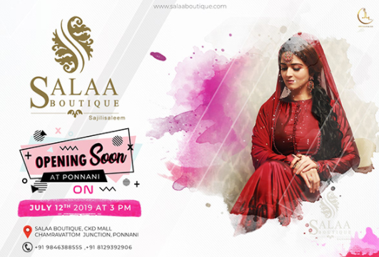

Branding And Promotional
Mostly these designs and promo activities are done as a part of Community events, Collegiative Events and Startup marketing.
Itiha 2K18
Itiha 2K18, National Techno-Cultural Fest of Rajadhani Institute of Engineering and Technology, Trivandrum hosted on March 8th, 9th and 10th, 2018. I was one among the designers and collaborator in the media and promotional club.


ITIHA 2K19
#the_ecstacy_of_culture
It was a great opportunity to work for the second time in the designing and media committee of our fest. Had been one of the prior designer under the lead by Rahul Raj SR, Committee Head. Here are some of my best piece of work.


Pratheeka 2019 - The annual college magazine.
It was a great opportunity to create the face of Pratheeka 2019 - The annual college magazine. Representing as a cover designer as well as a core designer with the blessings as a team of 15, we were able to publish the hardcopies within the summerfall of 2019.

Salaa Boutique
Logo Retouch and Flyer Design For Salaa Boutique
